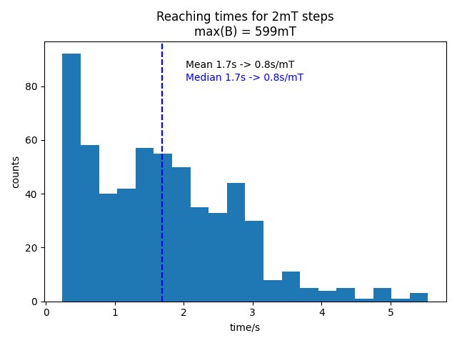

Welcome to Bruker Hall and MR Measurements’s documentation!¶
Description¶
Controlled ramping of a B-field function and measuring Lockin-Amplifier parameters. Can be used for Hall-effect and MR measurements.
H-Field Ramp¶
The waveform for the ramp is generated automatically by means of the
parameters (start, stop, increment, etc.) in measurement config file.
Based on this wave 2 set-values are generated for
1. the xantrex power supply and
2. the PID-controller.
The first is taken from a fit-function (see the following figure) based
on B-field measurements for different power supply voltages.
The fit-function is generated from the data provided in “B-field-lookup.yaml”. The order of the fit-function can be passed by setting the ~deg~ parameter. If not provided, a fit of the first order is calculated.
{kind=link}
The PID-controller value is just a scaled value based on the ramp wave. See the following figure for an example for a triangular shaped ramp from 0 to 1T

Bruker time-constant¶
Needed to prevent runaways of the is value that must be compensated by the PID-controller and result in (too) high currents. This happens when the set values are increased too fast for the Bruker magnet to follow (main coil). The time-constant describes the time it takes the main coil to reach a new set value. It is calculated in s/mT and can be scaled by the respective step size of a measurement. The scaled value should be awaited between subsequent set values. A time-constant of 0.8s/mT follows from a field-ramp measurement form 0 to 600mT in 2mT steps.
The time-constant was calculated by ramping the B-field with the xantrex power supply only. It is assumed that a new set value is reached when two subsequent (200ms apart from one another) B-field measurements differ by less than 0.1mT. This time was recorded and taken as a basis for the calculation.
{kind=link}
Measurement¶
The SR8320 sources a sinus voltage, which generates a “constant” current by means of a high resistance (kΩ). The input is locked in at the source frequency. For every value in of the waveform array
the respective B-field is set,
the process waits until the B-field is within the boundary “delta-start” configured in
measurement configa number of N measurements is recorded and written to a file
Usage¶
git clone --recurse-submodules https://gitlab.lrz.de/m-aximilian/bruker-hall.git
cd bruker-hall
Notes and Parameters¶
Parameters¶
Hall Sensor: 1V := 100mT
Xantrex voltage range: 0-150V
Hardware¶
2T Bruker Magnet
xantrex XFR 150-8 <https://www.manualslib.com/manual/633965/Xantrex-Xfr-6-200.html#product-XFR%20150-8>
Stanford Research SR830 Lockin Amplifier <https://www.thinksrs.com/downloads/pdfs/manuals/SR830m.pdf>
Audio Amplifier with PID-controller